金剛宮/台北縣石門郷
貝殻尽くしの頂山寺を後にして今度は海沿いに出る。
台湾最北端の地である。
30分おきに降る豪雨のため海は灰色に濁り、東シナ海は真冬の日本海並みに大荒れ。
目指すは金剛宮。民國77(1988)年に出来た四面佛で有名なお寺だそうで。
入口付近で早くも大興奮。
巨大な神サマやら観音サマやらがお出迎え。
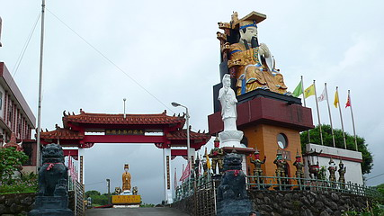
山門右に居るヒゲの神様は玉皇大帝という道教神の皇帝である。
台湾ではこのように仏教と道教のエッセンスが入り乱れていて、結果どっちの宗教施設なのか良くわからない場合が多い。
早くも結論めいた事を言ってしまうが、台湾では仏教も道教も実はぐちゃぐちゃで参拝者サイドからすればそんな区分はどうでもいい事のようである。実際、我々が普通思い浮かべるであろう道教の神さま（関帝や媽祖など）のほとんどは純粋な道教神というよりも民衆の間で人気があった神さまが後世になって道教神として組み込まれている、つまり民間信仰神なのだ。
それでは何が重要か、といえばそれは言わずと知れた事。THE☆御利益なのである。
で、門を潜るとこんな。
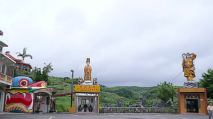
大聖爺と媽祖の揃い踏みである。どちらも4〜5メートルはあろうか。ギリギリ大仏サイズ、という事にしておこう。
先程の玉皇大帝像に比べればやや小振りだが、早くも大仏３連チャン。あ、玉皇大帝の隣にも観音サマがいましたね。
大聖爺とは斉天大聖、つまり孫悟空の事である。
道教では武闘派の神さまとして篤い信仰を集めているのだ。
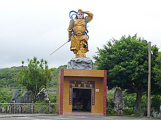
オラ悟空、つかマチャアキ
中では不気味すぎる人形がお待ちかね。
祭礼の時にでも被るのだろうか？
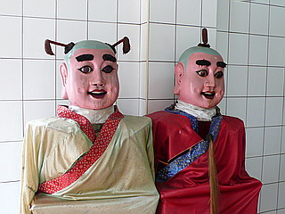
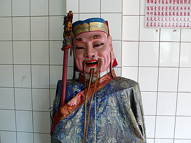
それよりも何よりも気になるのは媽祖像の左にある龍。四角い建物に無理矢理取り付けたのは一目瞭然である。
ここから金剛宮参拝の長い旅路がはじまるのだ。
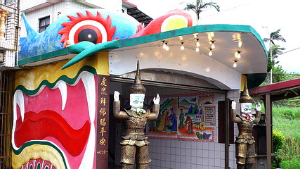
上のほうに見える八角堂。あそこがゴールなのだろう。
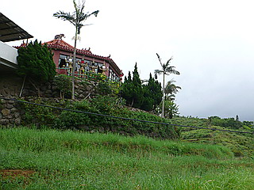
龍に飲み込まれ先へ進むと、二十四孝のブロンズ像が並ぶ回廊へ。
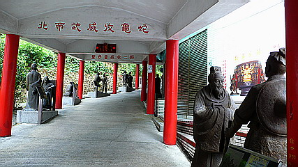
二十四孝とは古今東西の孝行者ベスト24。
鹿の皮を被って親孝行？親が蚊に刺されないように自ら蚊に刺されるという消極的な先制攻撃。蚊取り線香じゃダメなの？
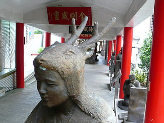
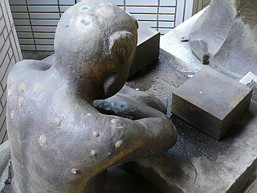
歯のない婆ちゃんに乳を飲ませる嫁さん。コレ、好きなんだよなあ〜。
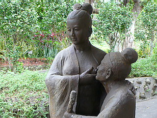
そんな感涙モノの孝行街道にも大仏クラスの方々がいらっしゃるので油断ならない。
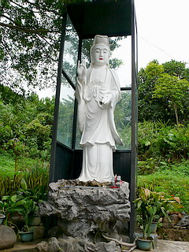
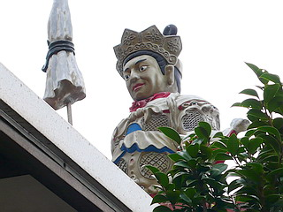
さて、そんなこんなで八角のお堂に到着。
中央には泰國渡来の四面佛が鎮座している。
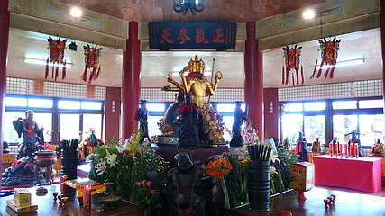
八角堂の外にはタイから付いて来たと思われる従者が心配そうに中を覗いている。
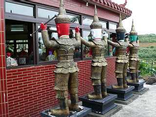
赤「親方、台湾に来て食べ物とか大丈夫かな〜」
白「親方は辛い物苦手だからなあ〜」
青「バカ、タイ料理の方が辛いっつーの」
緑「えっ、タイ料理って辛かったの？」
八角堂から見下ろした先程の前庭。あ〜っ、今気づいたけど玉皇大帝の隣には蒋介石の大仏が…
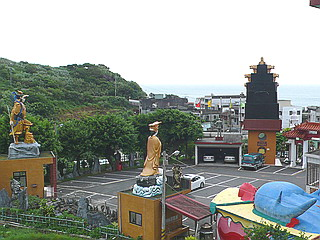
四面佛は日本では比較的珍しいが何故か中華圏ではたま〜に見かける。
そのどれもタイから勧進したもの。
日中関係におけるパンダのごとく、中国仏教とタイ仏教の橋渡しアイテムになっているのだろうか?
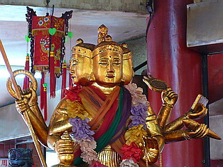
八角の各辺の壁沿いには台湾民間信仰オールスターズが並んでいる。
大きさや材質がマチマチなので、ありがたそうな神さまを片っ端から並べてみました、みたいな感じになっている。
そんな一角に、またおりました。ちょっとダンディーな済公活仏。
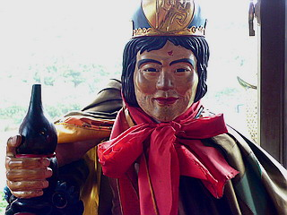
「やあ、君も一献やりたまへ」
堂内の片隅にあったおみくじマシン。台湾にもあるんですね。
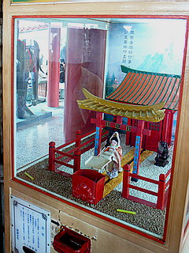
お堂の外には硬貨を咥えた巨大なカエル。
コレってベトナムのソイテンパークでも紹介したが、金運を呼び込む縁起物らしい。
見た目ありがたみ無さそうだけど、結構スーパーや土産屋などの縁起グッズコーナーに置いてあったりする。
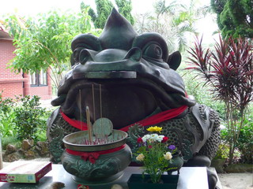
さて、本尊の四面佛も見たし、大仏も一杯見たし、そろそろ帰って飯でも食いに行くか〜。
…と思ったらまだまだ終わらなかったのである！
金剛宮その2へＧＯ！
台湾大佛列伝3
珍寺大道場 HOME